f(x) = sin(x)
plotif(f, f, -2pi, 2pi)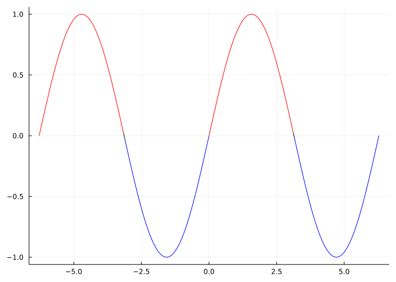
This section uses these add-on packages:
using CalculusWithJulia
using Plots
using SymPy
using RootsThis section explores properties of a function, \(f(x)\), that are described by properties of its first and second derivatives, \(f'(x)\) and \(f''(x)\). As part of the conversation two tests are discussed that characterize when a critical point is a relative maximum or minimum. (We know that any relative maximum or minimum occurs at a critical point, but it is not true that any critical point will be a relative maximum or minimum.)
We start with some vocabulary:
A function \(f\) is positive on an interval \(I\) if for any \(a\) in \(I\) it must be that \(f(a) > 0\).
Of course, we define negative in a parallel manner. The intermediate value theorem says a continuous function can not change from positive to negative without crossing \(0\). This is not the case for functions with jumps, of course.
Next,
A function, \(f\), is (strictly) increasing on an interval \(I\) if for any \(a < b\) it must be that \(f(a) < f(b)\).
The word strictly is related to the inclusion of the \(<\) precluding the possibility of a function being flat over an interval that the \(\leq\) inequality would allow.
A parallel definition with \(a < b\) implying \(f(a) > f(b)\) would be used for a strictly decreasing function.
We can try and prove these properties for a function algebraically – we’ll see both are related to the zeros of some function. However, before proceeding to that it is usually helpful to get an idea of where the answer is using exploratory graphs.
We will use a helper function, plotif(f, g, a, b) that plots the function f over [a,b] coloring it red when g is positive (and blue otherwise). Such a function is defined for us in the accompanying CalculusWithJulia package, which has been previously been loaded.
To see where a function is positive, we simply pass the function object in for both f and g above. For example, let’s look at where \(f(x) = \sin(x)\) is positive:
f(x) = sin(x)
plotif(f, f, -2pi, 2pi)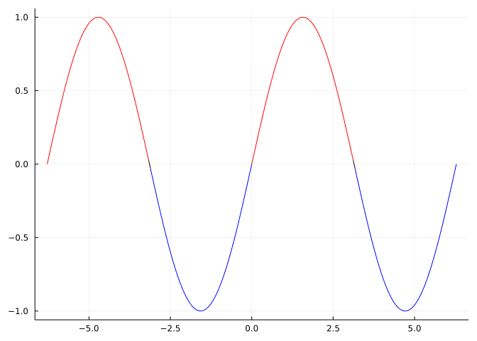
Let’s graph with cos in the masking spot and see what happens:
plotif(sin, cos, -2pi, 2pi)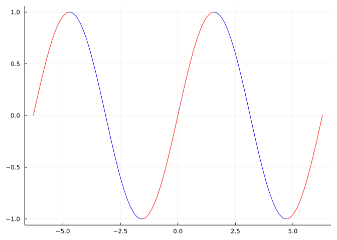
Maybe surprisingly, we see that the increasing parts of the sine curve are now highlighted. Of course, the cosine is the derivative of the sine function, now we discuss that this is no coincidence.
For the sequel, we will use f' notation to find numeric derivatives, with the notation being defined in the CalculusWithJulia package using the ForwardDiff package.
The derivative, \(f'(x)\), computes the slope of the tangent line to the graph of \(f(x)\) at the point \((x,f(x))\). If the derivative is positive, the tangent line will have an increasing slope. Clearly if we see an increasing function and mentally layer on a tangent line, it will have a positive slope. Intuitively then, increasing functions and positive derivatives are related concepts. But there are some technicalities.
Suppose \(f(x)\) has a derivative on \(I\) . Then
If \(f'(x)\) is positive on an interval \(I=(a,b)\), then \(f(x)\) is strictly increasing on \(I\).
Meanwhile,
If a function \(f(x)\) is increasing on \(I\), then \(f'(x) \geq 0\).
The technicality being the equality parts. In the second statement, we have the derivative is non-negative, as we can’t guarantee it is positive, even if we considered just strictly increasing functions.
We can see by the example of \(f(x) = x^3\) that strictly increasing functions can have a zero derivative, at a point.
The mean value theorem provides the reasoning behind the first statement: on \(I\), the slope of any secant line between \(d < e\) (both in \(I\)) is matched by the slope of some tangent line, which by assumption will always be positive. If the secant line slope is written as \((f(e) - f(d))/(e - d)\) with \(d < e\), then it is clear then that \(f(e) - f(d) > 0\), or \(d < e\) implies \(f(d) < f(e)\).
The second part, follows from the secant line equation. The derivative can be written as a limit of secant-line slopes, each of which is positive. The limit of positive things can only be non-negative, though there is no guarantee the limit will be positive.
So, to visualize where a function is increasing, we can just pass in the derivative as the masking function in our plotif function, as long as we are wary about places with \(0\) derivative (flat spots).
For example, here, with a more complicated function, the intervals where the function is increasing are highlighted by passing in the functions derivative to plotif:
f(x) = sin(pi*x) * (x^3 - 4x^2 + 2)
plotif(f, f', -2, 2)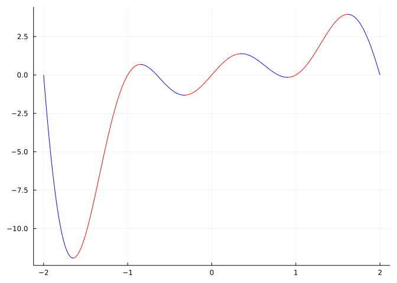
When a function changes from increasing to decreasing, or decreasing to increasing, it will have a peak or a valley. More formally, such points are relative extrema.
When discussing the mean value thereom, we defined relative extrema :
- The function \(f(x)\) has a relative maximum at \(c\) if the value \(f(c)\) is an absolute maximum for some open interval containing \(c\).
- Similarly, \(f(x)\) has a relative minimum at \(c\) if the value \(f(c)\) is an absolute minimum for some open interval about \(c\).
We know since Fermat that:
Relative maxima and minima must occur at critical points.
Fermat says that critical points – where the function is defined, but its derivative is either \(0\) or undefined – are interesting points, however:
A critical point need not indicate a relative maxima or minima.
Again, \(f(x)=x^3\) provides the example at \(x=0\). This is a critical point, but clearly not a relative maximum or minimum - it is just a slight pause for a strictly increasing function.
This leaves the question:
When will a critical point correspond to a relative maximum or minimum?
This question can be answered by considering the first derivative.
The first derivative test: If \(c\) is a critical point for \(f(x)\) and if \(f'(x)\) changes sign at \(x=c\), then \(f(c)\) will be either a relative maximum or a relative minimum.
- It will be a relative maximum if the derivative changes sign from \(+\) to \(-\).
- It will be a relative minimum if the derivative changes sign from \(-\) to \(+\).
- If \(f'(x)\) does not change sign at \(c\), then \(f(c)\) is not a relative maximum or minimum.
The classification part, should be clear: e.g., if the derivative is positive then negative, the function \(f\) will increase to \((c,f(c))\) then decrease from \((c,f(c))\) – so \(f\) will have a local maximum at \(c\).
Our definition of critical point assumes \(f(c)\) exists, as \(c\) is in the domain of \(f\). With this assumption, vertical asymptotes are avoided. However, it need not be that \(f'(c)\) exists. The absolute value function at \(x=0\) provides an example: this point is a critical point where the derivative changes sign, but \(f'(x)\) is not defined at exactly \(x=0\). Regardless, it is guaranteed that \(f(c)\) will be a relative minimum by the first derivative test.
Consider the function \(f(x) = e^{-\lvert x\rvert} \cos(\pi x)\) over \([-3,3]\):
𝐟(x) = exp(-abs(x)) * cos(pi * x)
plotif(𝐟, 𝐟', -3, 3)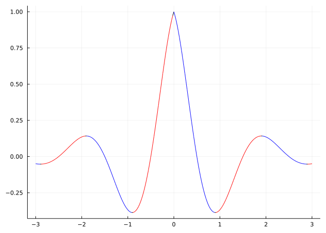
We can see the first derivative test in action: at the peaks and valleys – the relative extrema – the color changes. This is because \(f'\) is changing sign as as the function changes from increasing to decreasing or vice versa.
This function has a critical point at \(0\), as can be seen. It corresponds to a point where the derivative does not exist. It is still identified through find_zeros, which picks up zeros and in case of discontinuous functions, like f', zero crossings:
find_zeros(𝐟', -3, 3)7-element Vector{Float64}:
-2.9019067380477064
-1.9019067380477062
-0.9019067380477064
-0.0
0.9019067380477064
1.9019067380477062
2.9019067380477064Find all the relative maxima and minima of the function \(f(x) = \sin(\pi \cdot x) \cdot (x^3 - 4x^2 + 2)\) over the interval \([-2, 2]\).
We will do so numerically. For this task we first need to gather the critical points. As each of the pieces of \(f\) are everywhere differentiable and no quotients are involved, the function \(f\) will be everywhere differentiable. As such, only zeros of \(f'(x)\) can be critical points. We find these with
𝒇(x) = sin(pi*x) * (x^3 - 4x^2 + 2)
𝒇cps = find_zeros(𝒇', -2, 2)6-element Vector{Float64}:
-1.6497065688663188
-0.8472574303034358
-0.3264827018362353
0.35183579595045034
0.8981933926622453
1.6165308438251855We should be careful though, as find_zeros may miss zeros that are not simple or too close together. A critical point will correspond to a relative maximum if the function crosses the axis, so these can not be “pauses.” As this is exactly the case we are screening for, we double check that all the critical points are accounted for by graphing the derivative:
plot(𝒇', -2, 2, legend=false)
plot!(zero)
scatter!(𝒇cps, 0*𝒇cps)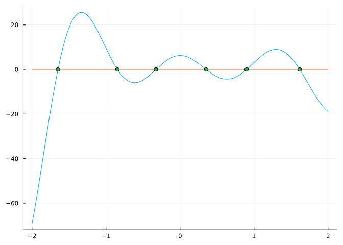
We see the six zeros as stored in cps and note that at each the function clearly crosses the \(x\) axis.
From this last graph of the derivative we can also characterize the graph of \(f\): The left-most critical point coincides with a relative minimum of \(f\), as the derivative changes sign from negative to positive. The critical points then alternate relative maximum, relative minimum, relative maximum, relative, minimum, and finally relative maximum.
Consider the function \(g(x) = \sqrt{\lvert x^2 - 1\rvert}\). Find the critical points and characterize them as relative extrema or not.
We will apply the same approach, but need to get a handle on how large the values can be. The function is a composition of three functions. We should expect that the only critical points will occur when the interior polynomial, \(x^2-1\) has values of interest, which is around the interval \((-1, 1)\). So we look to the slightly wider interval \([-2, 2]\):
g(x) = sqrt(abs(x^2 - 1))
gcps = find_zeros(g', -2, 2)3-element Vector{Float64}:
-0.9999999999999999
0.0
0.9999999999999999We see the three values \(-1\), \(0\), \(1\) that correspond to the two zeros and the relative minimum of \(x^2 - 1\). We could graph things, but instead we characterize these values using a sign chart. A piecewise continuous function can only change sign when it crosses \(0\) or jumps over \(0\). The derivative will be continuous, except possibly at the three values above, so is piecewise continuous.
A sign chart picks convenient values between crossing points to test if the function is positive or negative over those intervals. When computing by hand, these would ideally be values for which the function is easily computed. On the computer, this isn’t a concern; below the midpoint is chosen:
pts = sort(union(-2, gcps, 2)) # this includes the endpoints (a, b) and the critical points
test_pts = pts[1:end-1] + diff(pts)/2 # midpoints of intervals between pts
[test_pts sign.(g'.(test_pts))]4×2 Matrix{Float64}:
-1.5 -1.0
-0.5 1.0
0.5 -1.0
1.5 1.0Such values are often summarized graphically on a number line using a sign chart:
- ∞ + 0 - ∞ + g'
<---- -1 ----- 0 ----- 1 ---->(The values where the function is \(0\) or could jump over \(0\) are shown on the number line, and the sign between these points is indicated. So the first minus sign shows \(g'(x)\) is negative on \((-\infty, -1)\), the second minus sign shows \(g'(x)\) is negative on \((0,1)\).)
Reading this we have:
In the CalculusWithJulia package there is sign_chart function that will do such work for us, though with a different display:
sign_chart(g', -2, 2)3-element Vector{NamedTuple{(:DNE_0_∞, :sign_change), Tuple{Float64, String}}}:
(DNE_0_∞ = -0.9999999999999999, sign_change = "- → +")
(DNE_0_∞ = 0.0, sign_change = "+ → -")
(DNE_0_∞ = 0.9999999999999999, sign_change = "- → +")(This function numerically identifies \(x\)-values for the specified function which are zeros, infinities, or points where the function jumps \(0\). It then shows the resulting sign pattern of the function from left to right.)
We did this all without graphs. But, let’s look at the graph of the derivative:
plot(g', -2, 2)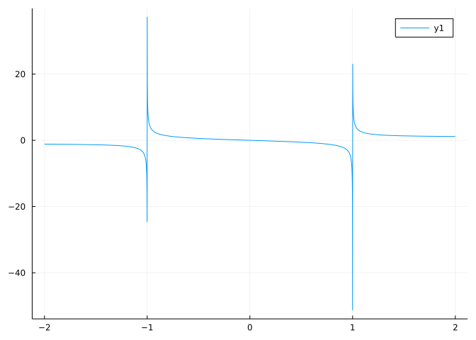
We see asymptotes at \(x=-1\) and \(x=1\)! These aren’t zeroes of \(f'(x)\), but rather where \(f'(x)\) does not exist. The conclusion is correct - each of \(-1\), \(0\) and \(1\) are critical points with the identified characterization - but not for the reason that they are all zeros.
plot(g, -2, 2)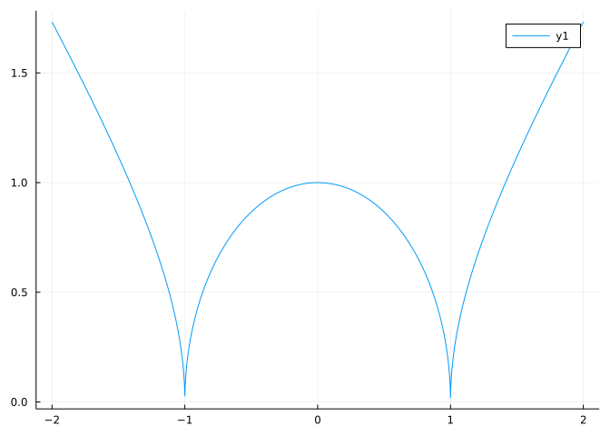
Finally, why does find_zeros find these values that are not zeros of \(g'(x)\)? As discussed briefly above, it uses the bisection algorithm on bracketing intervals to find zeros which are guaranteed by the intermediate value theorem, but when applied to discontinuous functions, as f' is, will also identify values where the function jumps over \(0\).
Consider the function \(f(x) = \sin(x) - x\). Characterize the critical points.
We will work symbolically for this example.
@syms x
fx = sin(x) - x
fp = diff(fx, x)
solve(fp)2-element Vector{Sym}:
0
2⋅πWe get values of \(0\) and \(2\pi\). Let’s look at the derivative at these points:
At \(x=0\) we have to the left and right signs found by
fp(-pi/2), fp(pi/2)(-1.00000000000000, -1.00000000000000)Both are negative. The derivative does not change sign at \(0\), so the critical point is neither a relative minimum or maximum.
What about at \(2\pi\)? We do something similar:
fp(2pi - pi/2), fp(2pi + pi/2)(-1.00000000000000, -1.00000000000000)Again, both negative. The function \(f(x)\) is just decreasing near \(2\pi\), so again the critical point is neither a relative minimum or maximum.
A graph verifies this:
plot(fx, -3pi, 3pi)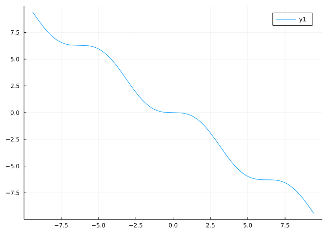
We see that at \(0\) and \(2\pi\) there are “pauses” as the function decreases. We should also see that this pattern repeats. The critical points found by solve are only those within a certain domain. Any value that satisfies \(\cos(x) - 1 = 0\) will be a critical point, and there are infinitely many of these of the form \(n \cdot 2\pi\) for \(n\) an integer.
As a comment, the solveset function, which is replacing solve, returns the entire collection of zeros:
solveset(fp)Of course, sign_chart also does this, only numerically. We just need to pick an interval wide enough to contains \([0,2\pi]\)
sign_chart((x -> sin(x)-x)', -3pi, 3pi)3-element Vector{NamedTuple{(:DNE_0_∞, :sign_change), Tuple{Float64, String}}}:
(DNE_0_∞ = -6.283185297666141, sign_change = "- → -")
(DNE_0_∞ = 0.0, sign_change = "- → -")
(DNE_0_∞ = 6.283185307351308, sign_change = "- → -")Suppose you know \(f'(x) = (x-1)\cdot(x-2)\cdot (x-3) = x^3 - 6x^2 + 11x - 6\) and \(g'(x) = (x-1)\cdot(x-2)^2\cdot(x-3)^3 = x^6 -14x^5 +80x^4-238x^3+387x^2-324x+108\).
How would the graphs of \(f(x)\) and \(g(x)\) differ, as they share identical critical points?
The graph of \(f(x)\) - a function we do not have a formula for - can have its critical points characterized by the first derivative test. As the derivative changes sign at each, all critical points correspond to relative maxima. The sign pattern is negative/positive/negative/positive so we have from left to right a relative minimum, a relative maximum, and then a relative minimum. This is consistent with a \(4\)th degree polynomial with \(3\) relative extrema.
For the graph of \(g(x)\) we can apply the same analysis. Thinking for a moment, we see as the factor \((x-2)^2\) comes as a power of \(2\), the derivative of \(g(x)\) will not change sign at \(x=2\), so there is no relative extreme value there. However, at \(x=3\) the factor has an odd power, so the derivative will change sign at \(x=3\). So, as \(g'(x)\) is positive for large negative values, there will be a relative maximum at \(x=1\) and, as \(g'(x)\) is positive for large positive values, a relative minimum at \(x=3\).
The latter is consistent with a \(7\)th degree polynomial with positive leading coefficient. It is intuitive that since \(g'(x)\) is a \(6\)th degree polynomial, \(g(x)\) will be a \(7\)th degree one, as the power rule applied to a polynomial results in a polynomial of lesser degree by one.
Here is a simple schematic that illustrates the above considerations.
f' - 0 + 0 - 0 + f'-sign
↘ ↗ ↘ ↗ f-direction
∪ ∩ ∪ f-shape
g' + 0 - 0 - 0 + g'-sign
↗ ↘ ↘ ↗ g-direction
∩ ~ ∪ g-shape
<------ 1 ----- 2 ----- 3 ------>Consider the function \(f(x) = x^2\). Over this function we draw some secant lines for a few pairs of \(x\) values:
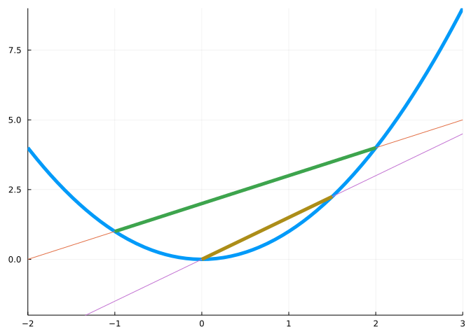
The graph attempts to illustrate that for this function the secant line between any two points \(a < b\) will lie above the graph over \([a,b]\).
This is a special property not shared by all functions. Let \(I\) be an open interval.
Concave up: A function \(f(x)\) is concave up on \(I\) if for any \(a < b\) in \(I\), the secant line between \(a\) and \(b\) lies above the graph of \(f(x)\) over \([a,b]\).
A similar definition exists for concave down where the secant lines lie below the graph. Notationally, concave up says for any \(x\) in \([a,b]\):
\[ f(a) + \frac{f(b) - f(a)}{b-a} \cdot (x-a) \geq f(x) \quad\text{ (concave up) } \]
Replacing \(\geq\) with \(\leq\) defines concave down, and with either \(>\) or \(<\) will add the prefix “strictly.” These definitions are useful for a general definition of convex functions.
We won’t work with these definitions in this section, rather we will characterize concavity for functions which have either a first or second derivative:
- If \(f'(x)\) exists and is increasing on \((a,b)\), then \(f(x)\) is concave up on \((a,b)\).
- If \(f'(x)\) is decreasing on \((a,b)\), then \(f(x)\) is concave down.
A proof of this makes use of the same trick used to establish the mean value theorem from Rolle’s theorem. Assume \(f'\) is increasing and let \(g(x) = f(x) - (f(a) + M \cdot (x-a))\), where \(M\) is the slope of the secant line between \(a\) and \(b\). By construction \(g(a) = g(b) = 0\). If \(f'(x)\) is increasing, then so is \(g'(x) = f'(x) + M\). By its definition above, showing \(f\) is concave up is the same as showing \(g(x) \leq 0\). Suppose to the contrary that there is a value where \(g(x) > 0\) in \([a,b]\). We show this can’t be. Assuming \(g'(x)\) always exists, after some work, Rolle’s theorem will ensure there is a value where \(g'(c) = 0\) and \((c,g(c))\) is a relative maximum, and as we know there is at least one positive value, it must be \(g(c) > 0\). The first derivative test then ensures that \(g'(x)\) will increase to the left of \(c\) and decrease to the right of \(c\), since \(c\) is at a critical point and not an endpoint. But this can’t happen as \(g'(x)\) is assumed to be increasing on the interval.
The relationship between increasing functions and their derivatives – if $f’(x) > 0 $ on \(I\), then \(f\) is increasing on \(I\) – gives this second characterization of concavity when the second derivative exists:
- If \(f''(x)\) exists and is positive on \(I\), then \(f(x)\) is concave up on \(I\).
- If \(f''(x)\) exists and is negative on \(I\), then \(f(x)\) is concave down on \(I\).
This follows, as we can think of \(f''(x)\) as just the first derivative of the function \(f'(x)\), so the assumption will force \(f'(x)\) to exist and be increasing, and hence \(f(x)\) to be concave up.
Let’s look at the function \(x^2 \cdot e^{-x}\) for positive \(x\). A quick graph shows the function is concave up, then down, then up in the region plotted:
h(x) = x^2 * exp(-x)
plotif(h, h'', 0, 8)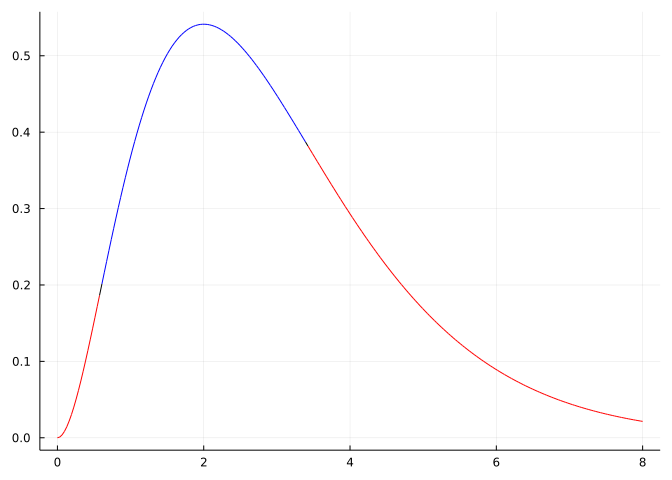
From the graph, we would expect that the second derivative - which is continuous - would have two zeros on \([0,8]\):
ips = find_zeros(h'', 0, 8)2-element Vector{Float64}:
0.5857864376269049
3.414213562373095As well, between the zeros we should have the sign pattern +, -, and +, as we verify:
sign_chart(h'', 0, 8)2-element Vector{NamedTuple{(:DNE_0_∞, :sign_change), Tuple{Float64, String}}}:
(DNE_0_∞ = 0.5857864376269049, sign_change = "+ → -")
(DNE_0_∞ = 3.414213562373095, sign_change = "- → +")Concave up functions are “opening” up, and often clearly \(U\)-shaped, though that is not necessary. At a relative minimum, where there is a \(U\)-shape, the graph will be concave up; conversely at a relative maximum, where the graph has a downward \(\cap\)-shape, the function will be concave down. This observation becomes:
The second derivative test: If \(c\) is a critical point of \(f(x)\) with \(f''(c)\) existing in a neighborhood of \(c\), then
- The value \(f(c)\) will be a relative maximum if \(f''(c) > 0\),
- The value \(f(c)\) will be a relative minimum if \(f''(c) < 0\), and
- if \(f''(c) = 0\) the test is inconclusive.
If \(f''(c)\) is positive in an interval about \(c\), then \(f''(c) > 0\) implies the function is concave up at \(x=c\). In turn, concave up implies the derivative is increasing so must go from negative to positive at the critical point.
The second derivative test is inconclusive when \(f''(c)=0\). No such general statement exists, as there isn’t enough information. For example, the function \(f(x) = x^3\) has \(0\) as a critical point, \(f''(0)=0\) and the value does not correspond to a relative maximum or minimum. On the other hand \(f(x)=x^4\) has \(0\) as a critical point, \(f''(0)=0\) is a relative minimum.
Use the second derivative test to characterize the critical points of \(j(x) = x^5 - x^4 + x^3\).
j(x) = x^5 - 2x^4 + x^3
jcps = find_zeros(j', -3, 3)3-element Vector{Float64}:
0.0
0.6000000000000001
1.0We can check the sign of the second derivative for each critical point:
[jcps j''.(jcps)]3×2 Matrix{Float64}:
0.0 0.0
0.6 -0.72
1.0 2.0That \(j''(0.6) < 0\) implies that at \(0.6\), \(j(x)\) will have a relative maximum. As \(''(1) > 0\), the second derivative test says at \(x=1\) there will be a relative minimum. That \(j''(0) = 0\) says that only that there may be a relative maximum or minimum at \(x=0\), as the second derivative test does not speak to this situation. (This last check, requiring a function evaluation to be 0, is susceptible to floating point errors, so isn’t very robust as a general tool.)
This should be consistent with this graph, where \(-0.25\), and \(1.25\) are chosen to capture the zero at \(0\) and the two relative extrema:
plotif(j, j'', -0.25, 1.25)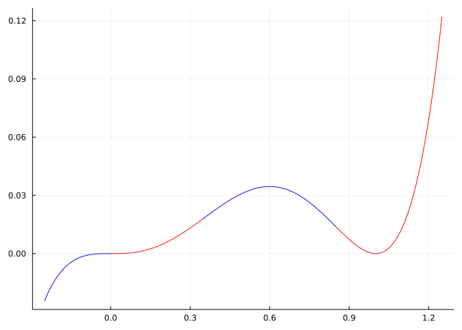
For the graph we see that \(0\) is not a relative maximum or minimum. We could have seen this numerically by checking the first derivative test, and noting there is no sign change:
sign_chart(j', -3, 3)3-element Vector{NamedTuple{(:DNE_0_∞, :sign_change), Tuple{Float64, String}}}:
(DNE_0_∞ = 0.0, sign_change = "+ → +")
(DNE_0_∞ = 0.6000000000000001, sign_change = "+ → -")
(DNE_0_∞ = 1.0, sign_change = "- → +")One way to visualize the second derivative test is to locally overlay on a critical point a parabola. For example, consider \(f(x) = \sin(x) + \sin(2x) + \sin(3x)\) over \([0,2\pi]\). It has \(6\) critical points over \([0,2\pi]\). In this graphic, we locally layer on \(6\) parabolas:
f(x) = sin(x) + sin(2x) + sin(3x)
p = plot(f, 0, 2pi, legend=false, color=:blue, linewidth=3)
cps = find_zeros(f', (0, 2pi))
Δ = 0.5
for c in cps
parabola(x) = f(c) + (f''(c)/2) * (x-c)^2
plot!(parabola, c - Δ, c + Δ, color=:red, linewidth=5, alpha=0.6)
end
p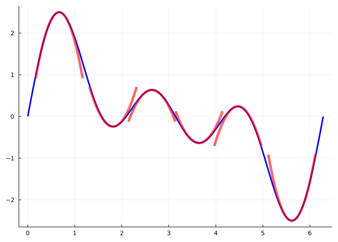
The graphic shows that for this function near the relative extrema the parabolas approximate the function well, so that the relative extrema are characterized by the relative extrema of the parabolas.
At each critical point \(c\), the parabolas have the form
\[ f(c) + \frac{f''(c)}{2}(x-c)^2. \]
The \(2\) is a mystery to be answered in the section on Taylor series, the focus here is on the sign of \(f''(c)\):
That is, the parabola picture is just the second derivative test in this light.
An inflection point is a value where the second derivative of \(f\) changes sign. At an inflection point the derivative will change from increasing to decreasing (or vice versa) and the function will change from concave up to down (or vice versa).
We can use the find_zeros function to identify potential inflection points by passing in the second derivative function. For example, consider the bell-shaped function
\[ k(x) = e^{-x^2/2}. \]
A graph suggests relative a maximum at \(x=0\), a horizontal asymptote of \(y=0\), and two inflection points:
k(x) = exp(-x^2/2)
plotif(k, k'', -3, 3)
The inflection points can be found directly, if desired, or numerically with:
find_zeros(k'', -3, 3)2-element Vector{Float64}:
-1.0
1.0(The find_zeros function may return points which are not inflection points. It primarily returns points where \(k''(x)\) changes sign, but may also find points where \(k''(x)\) is \(0\) yet does not change sign at \(x\).)
A car travels from a stop for 1 mile in 2 minutes. A graph of its position as a function of time might look like any of these graphs:
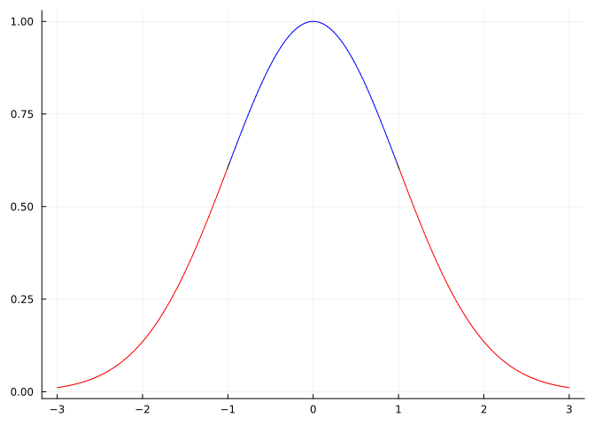
All three graphs have the same average velocity which is just the \(1/2\) miles per minute (\(30\) miles an hour). But the instantaneous velocity - which is given by the derivative of the position function) varies.
The graph f1 has constant velocity, so the position is a straight line with slope \(v_0\). The graph f2 is similar, though for first and last 30 seconds, the car does not move, so must move faster during the time it moves. A more realistic graph would be f3. The position increases continuously, as do the others, but the velocity changes more gradually. The initial velocity is less than \(v_0\), but eventually gets to be more than \(v_0\), then velocity starts to increase less. At no point is the velocity not increasing, for f3, the way it is for f2 after a minute and a half.
The rate of change of the velocity is the acceleration. For f1 this is zero, for f2 it is zero as well - when it is defined. However, for f3 we see the increase in velocity is positive in the first minute, but negative in the second minute. This fact relates to the concavity of the graph. As acceleration is the derivative of velocity, it is the second derivative of position - the graph we see. Where the acceleration is positive, the position graph will be concave up, where the acceleration is negative the graph will be concave down. The point \(t=1\) is an inflection point, and would be felt by most riders.
Consider this graph:
plot(airyai, -5, 0) # airyai in `SpecialFunctions` loaded with `CalculusWithJulia`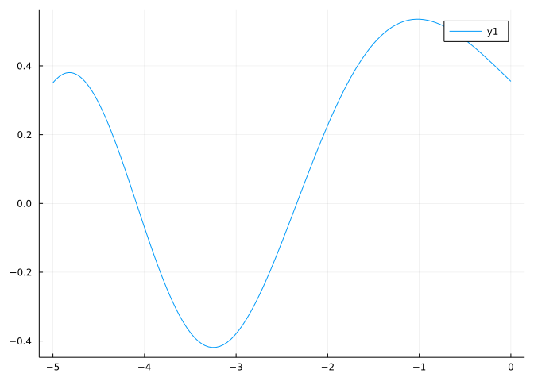
On what intervals (roughly) is the function positive?
Consider this graph:
On what intervals (roughly) is the function negative?
Consider this graph
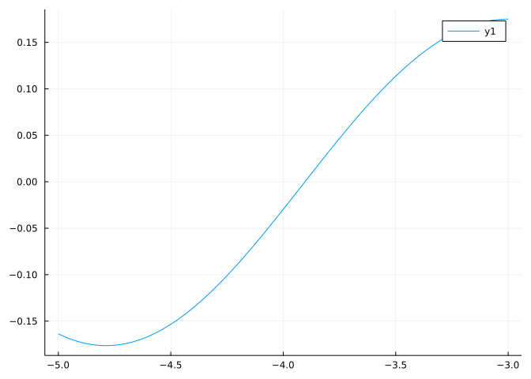
On what interval(s) is this function increasing?
Consider this graph
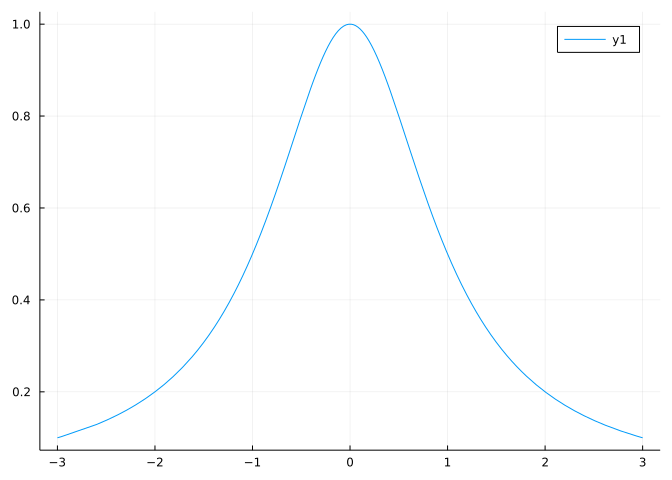
On what interval(s) is this function concave up?
If it is known that:
What can be concluded?
Mystery function \(f(x)\) has \(f'(2) = 0\) and \(f''(0) = 2\). What is the most you can say about \(x=2\)?
Find the smallest critical point of \(f(x) = x^3 e^{-x}\).
How many critical points does \(f(x) = x^5 - x + 1\) have?
How many inflection points does \(f(x) = x^5 - x + 1\) have?
At \(c\), \(f'(c) = 0\) and \(f''(c) = 1 + c^2\). Is \((c,f(c))\) a relative maximum? (\(f\) is a “nice” function.)
At \(c\), \(f'(c) = 0\) and \(f''(c) = c^2\). Is \((c,f(c))\) a relative minimum? (\(f\) is a “nice” function.)
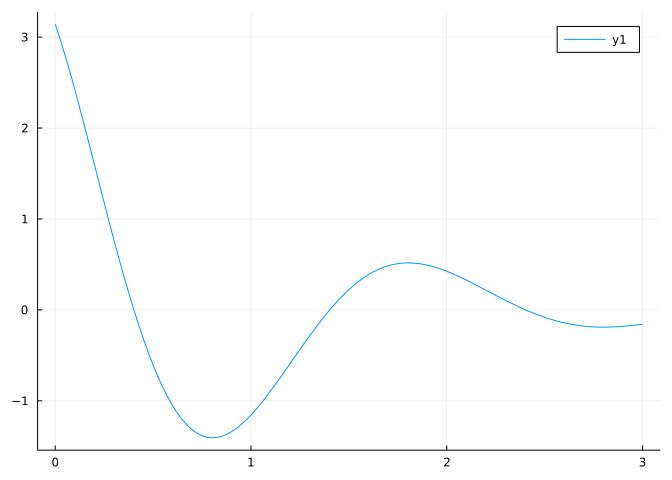
The graph shows \(f'(x)\). Is it possible that \(f(x) = e^{-x} \sin(\pi x)\)?
(Plot \(f(x)\) and compare features like critical points, increasing decreasing to that indicated by \(f'\) through the graph.)
The graph shows \(f'(x)\). Is it possible that \(f(x) = x^4 - 3x^3 - 2x + 4\)?
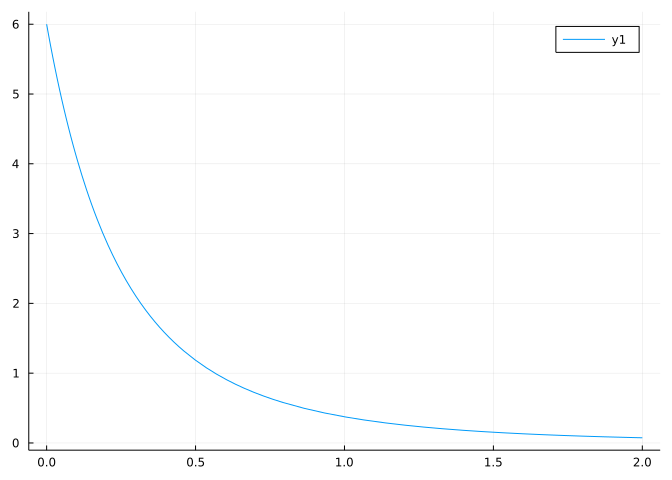
The graph shows \(f''(x)\). Is it possible that \(f(x) = (1+x)^{-2}\)?
This plot shows the graph of \(f'(x)\). What is true about the critical points and their characterization?
You know \(f''(x) = (x-1)^3\). What do you know about \(f(x)\)?
While driving we accelerate to get through a light before it turns red. However, at time \(t_0\) a car cuts in front of us and we are forced to break. If \(s(t)\) represents position, what is \(t_0\):
The investopedia website describes:
“An inflection point is an event that results in a significant change in the progress of a company, industry, sector, economy, or geopolitical situation and can be considered a turning point after which a dramatic change, with either positive or negative results, is expected to result.”
This accurately summarizes how the term is used outside of math books. Does it also describe how the term is used inside math books?
choices = ["Yes. Same words, same meaning",
"""No, but it is close. An inflection point is when the *acceleration* changes from positive to negative, so if "results" are about how a company's rate of change is changing, then it is in the ballpark."""]
radioq(choices, 2)The function \(f(x) = x^3 + x^4\) has a critical point at \(0\) and a second derivative of \(0\) at \(x=0\). Without resorting to the first derivative test, and only considering that near \(x=0\) the function \(f(x)\) is essentially \(x^3\), as \(f(x) = x^3(1+x)\), what can you say about whether the critical point is a relative extrema?